Platform
GM C-body
38 generations of 11 models by Buick, Cadillac, Oldsmobile and Pontiac, 1930–1996.
The cars
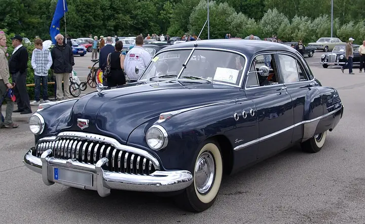
Buick Super- Cadillac Series 65
 Cadillac Series 62 · First generation (1940–1941)
Cadillac Series 62 · First generation (1940–1941) Oldsmobile 98 · First generation (1941)
Oldsmobile 98 · First generation (1941) Cadillac Series 62 · Second generation (1942, 1946–1947)
Cadillac Series 62 · Second generation (1942, 1946–1947) Oldsmobile 98 · Second generation (1942, 1946–1947)
Oldsmobile 98 · Second generation (1942, 1946–1947)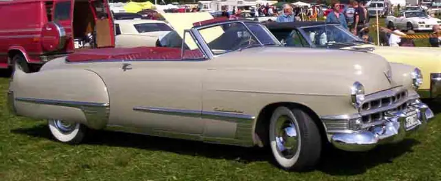
Cadillac Series 62 · Third generation (1948–1953) Oldsmobile 98 · Third generation (1948–1953)
Oldsmobile 98 · Third generation (1948–1953)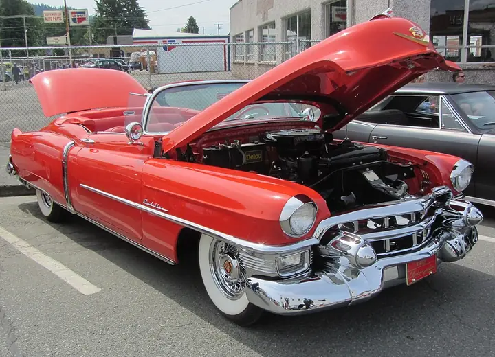
Cadillac Eldorado · First generation (1953) Cadillac Eldorado · Second generation (1954–1956)
Cadillac Eldorado · Second generation (1954–1956)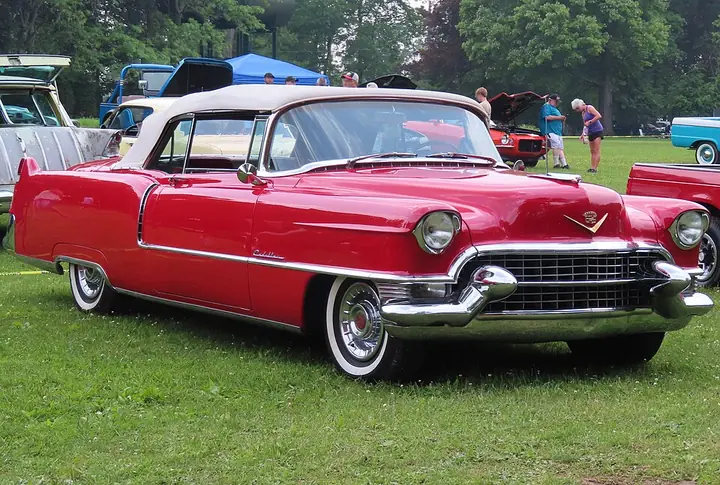
Cadillac Series 62 · Fourth generation (1954–1956) Oldsmobile 98 · Fourth generation (1954–1956)
Oldsmobile 98 · Fourth generation (1954–1956)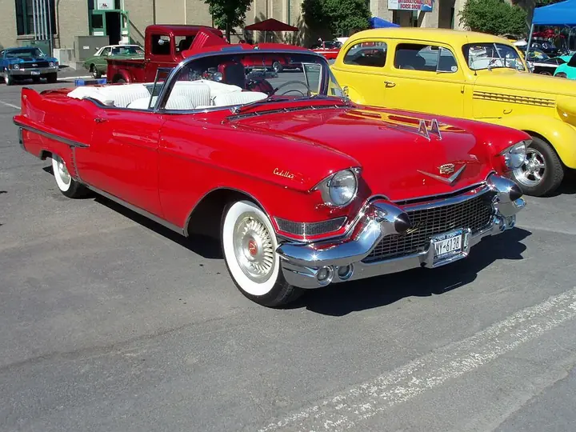
Cadillac Series 62 · Fifth generation (1957–1958) Oldsmobile 98 · Fifth generation (1957–1958)
Oldsmobile 98 · Fifth generation (1957–1958) Buick Electra · First generation (1959–1960)
Buick Electra · First generation (1959–1960)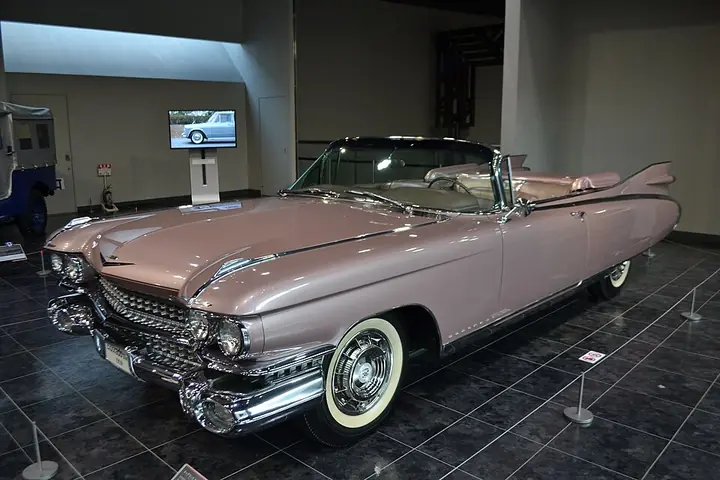
Cadillac Eldorado · Fourth generation (1959–1960) Cadillac Series 62 · Sixth generation (1959–1960)
Cadillac Series 62 · Sixth generation (1959–1960)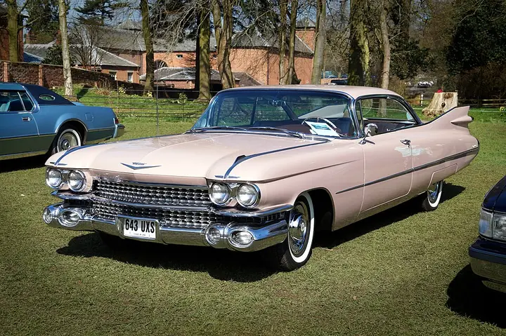
Cadillac de Ville series · First generation (1959–1960)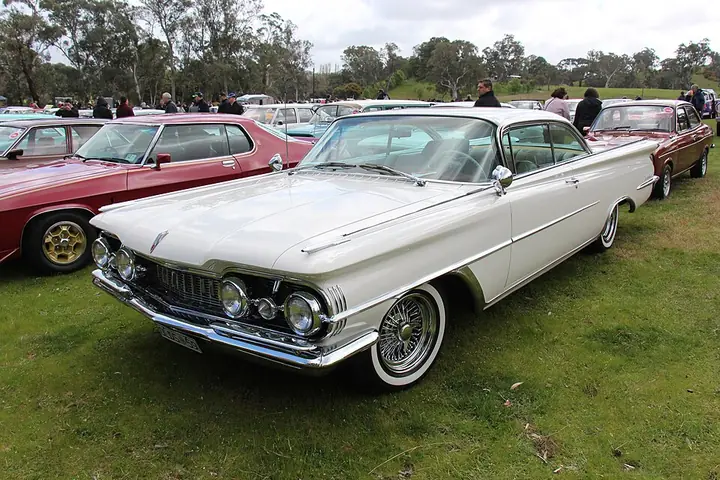
Oldsmobile 98 · Sixth generation (1959–1960)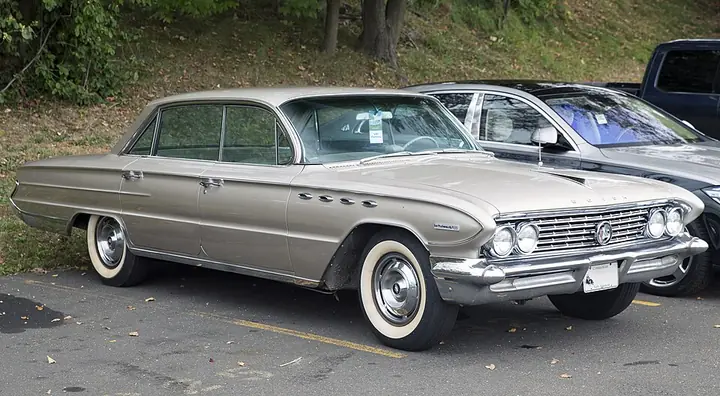
Buick Electra · Second generation (1961–1964)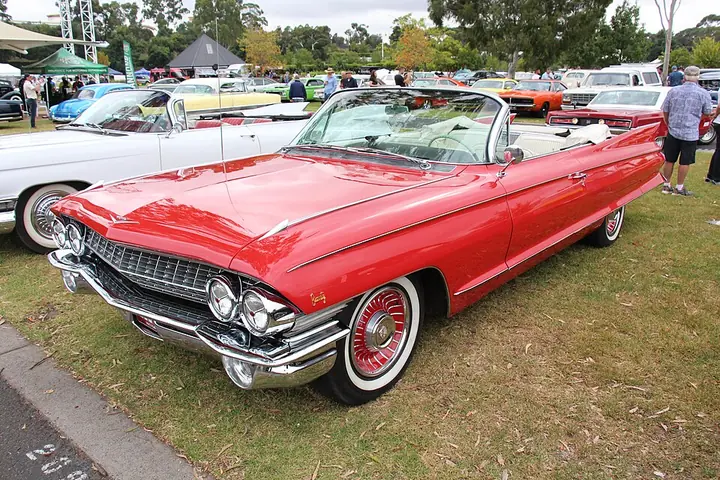
Cadillac Eldorado · Fifth generation (1961–1962)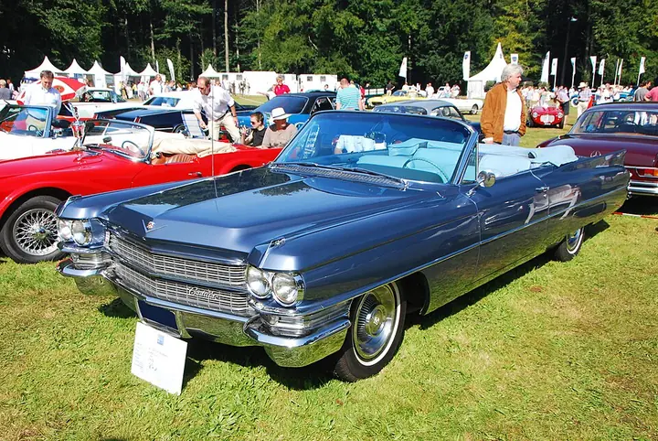
Cadillac Series 62 · Seventh generation (1961–1964) Oldsmobile 98 · Seventh generation (1961–1964)
Oldsmobile 98 · Seventh generation (1961–1964) Cadillac Eldorado · Sixth generation (1963–1964)
Cadillac Eldorado · Sixth generation (1963–1964)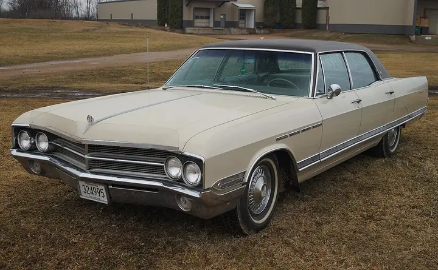
Buick Electra · Third generation (1965–1970) Cadillac Calais
Cadillac Calais Cadillac Eldorado · Seventh generation (1965–1966)
Cadillac Eldorado · Seventh generation (1965–1966)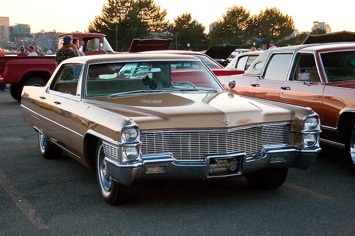
Cadillac de Ville series · Third generation (1965–1970) Buick Electra · Fourth generation (1971–1976)
Buick Electra · Fourth generation (1971–1976)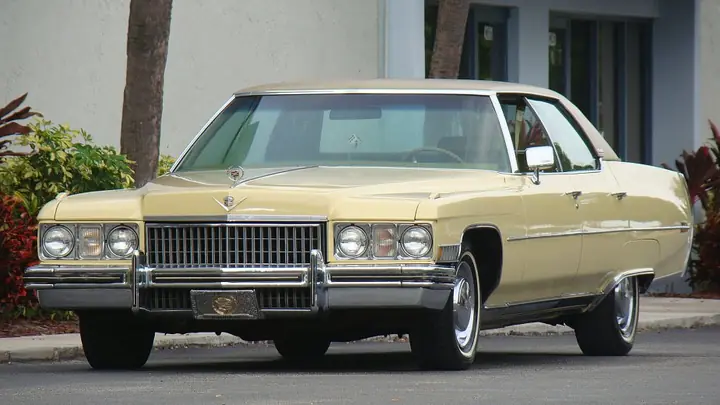
Cadillac de Ville series · Fourth generation (1971–1976) Oldsmobile 98 · Ninth generation (1971–1976)
Oldsmobile 98 · Ninth generation (1971–1976) Pontiac Grand Safari · First generation (1971–1976)
Pontiac Grand Safari · First generation (1971–1976)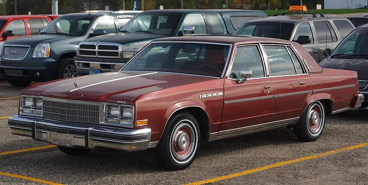
Buick Electra · Fifth generation (1977–1984) Cadillac Fleetwood Brougham
Cadillac Fleetwood Brougham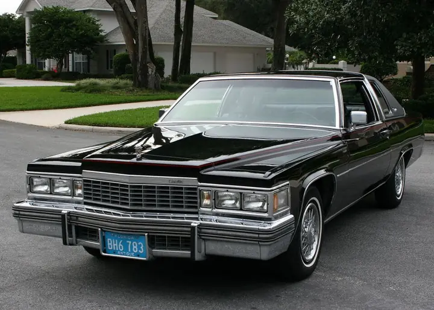
Cadillac de Ville series · Fifth generation (1977–1984)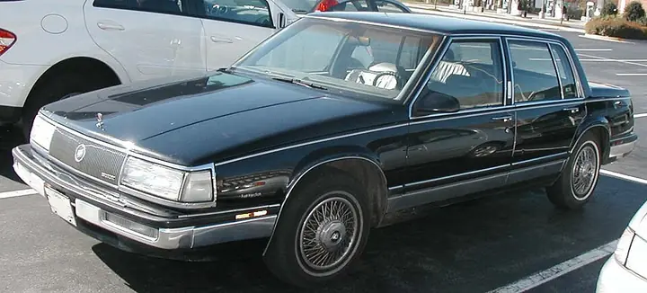
Buick Electra · Sixth generation (1985–1990)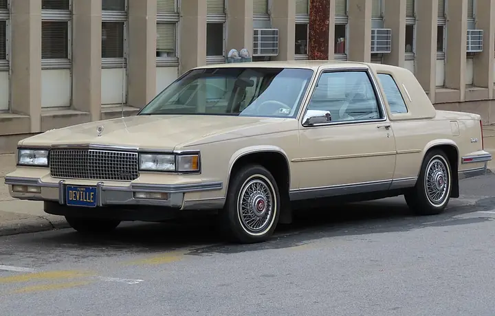
Cadillac de Ville series · Sixth generation (1985–1993) Buick Park Avenue · First generation (1991–1996)
Buick Park Avenue · First generation (1991–1996)